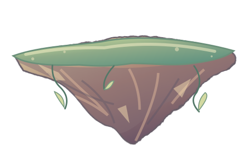

美術製作工具 · 技術驗證
僅供 Crew 原創美術製作使用。試驗 Paper.js 計算天然輪廓與 p5.brush 3.0.0 的筆觸烘焙；Rigby2D Runtime 以附授權的固定版原始碼做獨立骨架讀取驗證，不會影響玩家遊戲，也不會把網路上的示範角色打包進 Crew。
① 原創水彩浮島 · Painterly Bake

Paper.js：MIT · p5.brush：MIT。工具使用外部固定版本 CDN；發生網路或 WebGL2 問題時會明確報錯，不會假裝畫完。
尚未執行。需 WebGL2 和工具 CDN。
② 水母樹 · Rigby2D 骨架格式
自製 jelly-tree.skeleton.json 含 trunk、cap、9 根 tendril 和 9 根 tip 骨架，附 2 秒循環 sway 動畫。點擊將使用 Rigby2D 官方 JavaScript runtime readSkeletonJson / Pose / AnimationState 檢查，而非自寫 parser 假裝兼容。
尚未驗證。使用內附 Rigby2D 官方參考 Runtime 子集。
Rigby2D：MIT OR Apache-2.0，這裡沒有複製任何 NILA/Rigbytron 專有角色素材；骨架由 Crew 原創。官方 Runtime 文檔